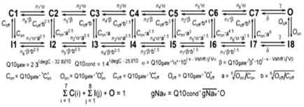
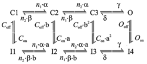

Description and Use of Fhf2WT and Fhf2KO Cardiomyocyte Strand
Models
DESCRIPTION:
The Fhf2WT and Fhf2KO
ventricular cardiomyocyte models described previously (Park et al, Nature Comm. 7:12966, 2016) were
scripted onto the NEURON software platform (Hines and Carnevale,
Neuroscientist 7:123, 2001) with
several modifications and then linked into strands with gap junctional
conductances.
Cardiomyocyte Dimensions and Gap
Junction Connectivity into Strands: The cardiomyocyte
model cells (myocyte.hoc) are cylinders with length (cell.L) of 100 microns and
diameter (cell.diam) of 22.34 microns. With standard
membrane unit capacitance (cell.cm) of 1 mF/cm2,
each cell’s membrane capacitance is 70 pF. The number of cells in the strand can be
selected in the Graphical User Interface (GUI); all published data analysis was
on strands comprising 111 cells (1.11 cm length).
Gap junctions are modeled as
reciprocal and equivalently weighted conductances
between adjacent cells n and n+1.
The conductance in source
cell n is gap_sources.o[n].g, while the
matching conductance in sink
cell n+1 is gap_dests.o[n+1].g,
with the currents driven by the voltage differential between source cell n and
sink cell n+1. These conductances are absolute set values (in pS) multiplied by Q10 = 1.43{(oC –
37)/10}, unlike transmembrane ion conductances
(below), which are expressed as conductance densities (S/cm2). The normal physiological setting
for junctional conductance is 772.8 nS at 37oC.
The junctional conductances
can be manipulated equally between all cell pairs in the GUI, or specific cell
pair conductances can be varied by text commands.
Ion Conductances
in Cardiomyocytes: All ion conductance densities are set equivalently in all
cells of the strand. Each ion
conductance density can be manipulated equally throughout the strand in the
GUI, or specific cell ion conductance densities can be varied by text commands.
Voltage-gated sodium conductances: The myocytes include two 16-state Markov model
voltage-dependent sodium conductances termed NAV_withF and NAV_noF (Scheme
1).
Scheme 1

Fhf2KO cardiomyocytes only have a functional NAV_noF conductance (i.e.  for NAV_withF =
0), while Fhf2WT cardiomyocytes contain a mixture of NAV_withF
and NAV_noF.
Employing this mixture does not imply knowledge that wild-type
ventricular cardiomyocytes necessarily bear a mixture
of sodium channels with and without associated FHF2, but rather the mixture of
models was employed to achieve a closer modeling of voltage dependent
inactivation to recorded values, as presented in Online Table VII
in Park et al., Circ Res 127, in press, 2020. It is also important to emphasize that
for each sodium channel model, the maximum available sodium conductance upon
simulated step depolarization from -135 mV to -30 mV is not equal to
for NAV_withF =
0), while Fhf2WT cardiomyocytes contain a mixture of NAV_withF
and NAV_noF.
Employing this mixture does not imply knowledge that wild-type
ventricular cardiomyocytes necessarily bear a mixture
of sodium channels with and without associated FHF2, but rather the mixture of
models was employed to achieve a closer modeling of voltage dependent
inactivation to recorded values, as presented in Online Table VII
in Park et al., Circ Res 127, in press, 2020. It is also important to emphasize that
for each sodium channel model, the maximum available sodium conductance upon
simulated step depolarization from -135 mV to -30 mV is not equal to  , but is equal to
, but is equal to  * (Coff/[Con+
Coff]). For the NAV_noF
model, Coff/[Con+ Coff] = 0.1667, while for the NAV_withF model, Coff/[Con+
Coff] = 0.9259. Since Fhf2WT and Fhf2KO
model cardiomyocytes were tuned to generate the same
peak sodium current upon step depolarization from -135 mV, consistent with our
recorded cardiomyocyte data, is greater in the Fhf2KO model cardiomyocyte. As stipulated above, that the maximum
available conductance in NAV_noF model is far less
than its
* (Coff/[Con+
Coff]). For the NAV_noF
model, Coff/[Con+ Coff] = 0.1667, while for the NAV_withF model, Coff/[Con+
Coff] = 0.9259. Since Fhf2WT and Fhf2KO
model cardiomyocytes were tuned to generate the same
peak sodium current upon step depolarization from -135 mV, consistent with our
recorded cardiomyocyte data, is greater in the Fhf2KO model cardiomyocyte. As stipulated above, that the maximum
available conductance in NAV_noF model is far less
than its  is not meant to necessarily imply that
most sodium channels in real Fhf2KO
cardiomyocytes are inactivated under all conditions.
is not meant to necessarily imply that
most sodium channels in real Fhf2KO
cardiomyocytes are inactivated under all conditions.
In the
Markov models, a and b are voltage(v)-dependent rate constants,
Q10gate is the thermodyamic scaling factor for rate
constants, and Q10cond is the thermodynamic scaling factor for conductance.
Parameters with equivalent values for NAV_withF and NAV_noF models are: n1 = 100, n2 = n3 = 20, n4 = 3, n5 =
1.5, n6 = 0.75, ‘a‘ = 2.44375 (ms-1), ‘b‘ = 0.01325 (ms-1), Va = Vb = 9 (mV), g =
150 (ms-1), d = 40 (ms-1),
‘O’off = 0.0005 (ms-1).
Parameters with different values for NAV_withF
vs NAV_noF models are: ‘C’on = 0.004 vs
0.025 (ms-1), ‘C’off = 0.05 vs
0.005 (ms-1), ‘O’on = 0.85 vs 1.3 (ms-1), Vshift = -54
vs -57.5 (mV). In the Fhf2KO cardiomyocyte,  _noF = 25 nS/pF,
while in the Fhf2WT
cardiomyocyte,
_noF = 25 nS/pF,
while in the Fhf2WT
cardiomyocyte,  _noF =
8.83 nS/pF and
_noF =
8.83 nS/pF and  _withF = 2.94 nS/pF.
_withF = 2.94 nS/pF.
Online Table VII in Park et al., Circ. Res. 127, in press, 2020
presents the NaV inactivation and
activation characteristics and generated currents of the Fhf2WT and Fhf2KO
cardiomyocyte models, which are in close agreement with sodium
current recordings from Fhf2WT
and Fhf2KO ventricular cardiomyocytes (Park et al, Nature Comm. 7:12966, 2016; Wang et al, J. Mol. Cell. Cardiol. 104:63, 2017; Park
et al, Circ. Res. Circ. Res. 127, in press, 2020). The  densities for the Fhf2WT cardiomyocyte were estimated to generate action
potential amplitude in isolated cardiomyocyte model with amplitude similar to
prior recordings and conduction velocity in model strand comparable to velocity
reported by optical mapping, while
densities for the Fhf2WT cardiomyocyte were estimated to generate action
potential amplitude in isolated cardiomyocyte model with amplitude similar to
prior recordings and conduction velocity in model strand comparable to velocity
reported by optical mapping, while  for NAV_noF in Fhf2KO cells allowed Fhf2WT and Fhf2KO model cardiomyocytes to generate same peak sodium current upon
depolarization from -135 mV holding potential, as previously demonstrated
empirically1. A
third cardiomyocyte model termed Fhf2WTNaVHYPO
has the same NaV gating parameters as the Fhf2WT model, but the Nav densities are reduced by a factor of 0.49 so that the Fhf2WTNaVHYPO and
Fhf2KO models generate the
same I-Napeak when depolarized from a
-87mV resting potential (Online
Table VII in Park et
al., Circ. Res. 127, in press, 2020).
for NAV_noF in Fhf2KO cells allowed Fhf2WT and Fhf2KO model cardiomyocytes to generate same peak sodium current upon
depolarization from -135 mV holding potential, as previously demonstrated
empirically1. A
third cardiomyocyte model termed Fhf2WTNaVHYPO
has the same NaV gating parameters as the Fhf2WT model, but the Nav densities are reduced by a factor of 0.49 so that the Fhf2WTNaVHYPO and
Fhf2KO models generate the
same I-Napeak when depolarized from a
-87mV resting potential (Online
Table VII in Park et
al., Circ. Res. 127, in press, 2020).
Nomenclature
clarification: The names of rate
parameters with units ms-1
above that are flanked by apostrophes in Park et al., Circ. Res. 127, in press, 20 are named differently in the uploaded Nav models, where the rate parameters are instead preceded
by the prefix A. As examples, ‘a‘ in the publication is equivalent to Aa in the uploaded model, ‘C’off
is equivalent to ACoff, etc. Additionally, in the publication is equivalent to gnabar in the uploaded model.
Voltage-gated calcium conductance: Fhf2WT
and Fhf2KO cardiomyocyte
models now have an equivalent L-type voltage-gated calcium conductance
expressed through an 8-state Markov model (Scheme 2) based upon the equivalent
calcium current density, voltage dependence of activation and steady-state
inactivation, and voltage-dependent rate of inactivation measured empirically
in Fhf2WT and Fhf2KO cardiomyocytes
(Figure 2 and Table 1 in Park et al., Circ.
Res. 127, in press, 20).
Scheme 2

The kinetic parameters are: Q10 = 3{(oC –
32.76)/10}, a = Q10 * 11.74 * 10{(Vm + 17)/50} (ms-1), b = Q10 *
0.0324 * 10{(-Vm - 17)/5.5} (ms-1), n1 = 32.532, n2
= 0.123, g = Q10 * 150 (ms-1), d = Q10 * 40 (ms-1), Con = Q10 * 0.001 (ms-1),
Coff
= Q10 * 10 (ms-1), Oon =
Q10 * 0.2 (ms-1), Ooff =
Q10 * 0.001 (ms-1), a = (Oon/Con)0.5,
b = (Ooff/Coff)0.5,
where Vm is membrane voltage.
Potassium conductances: The potassium conductances
are taken from Bondarenko et al., Am. J.
Physiol. Heart. Circ. Physiol.
287:H1378, 2004, and
include the time-dependent conductances fast
transient outward conductance (g_Kto_f), noninactivating ultrarapid
delayed rectifer (g_Kurdr),
noninactivating rapid delayed rectifier (g_Krdr), noninactivating slow
delayed rectifier (g_Ksdr), and steady-state
conductance (g_Kss), along with time-independent
conductance (g_Kti) that has both leak and inward
rectifier components. The weights
of these conductances were adjusted 1) to give
passive property DV as function of injected current
similar to empirically recorded dissociated ventricular cardiomyocytes
(Park et al, Nature Comm. 7:12966, 2016), and 2) to give a decay in the action potential in
cardiomyocyte strand models similar to measured action potential decay
optically recorded in paced ventricular myocardium (Online Fig II in Park et
al., Circ. Res. 127, in press, 2020). These conductance values (S/mF) are g_Kti = 0.00021, g_Kss = 0.00007, g_Kto_f
= 0.0000235, g_Kurdr = 0.000025, g_Krdr
= 0.000468, g_Ksdr = 0.00000575.
Other time-independent currents: Two other small currents were
incorporated to maintain cardiomyocytes at -87 mV
resting potential at all temperatures.
Background sodium conductance (g_Nabg =
0.0000018 S/mF) is taken from Bondarenko
et al., Am. J. Physiol. Heart. Circ. Physiol. 287:H1378, 2004,
while a temperature-dependent nonspecific current (i_ITEMP)
was incorporated to offset small temperature variations in conductances
near the resting potential, set at i_ITEMP = 0.0322 *
{43 – (oC)} (pA/pF).
Cardiomyocyte strand simulations. The cardiomyocyte strands have a resting membrane
potential of -87 mV. In all
simulations, a 100 msec delay was employed to allow
the NaV Markov models to reach steady
state prior to injecting the first cell with two 0.5 msec
current stimuli at 10 Hz. Injected
current amplitude was adjusted to achieve maximal induced sodium current in the
first cell. The generated currents
and voltages throughout the strand were analyzed only following the second
stimulus, which takes into account the states of dynamic conductances
at sinus rhythm. All simulations were conducted using Cvode multi-order variable time step integration method.
For each model, simulations were run after either elevating temperature
in 1oC increments or reducing junctional,
sodium, or calcium conductances in 1%
increments. Conduction safety was
defined as propagation of action potentials through the entire strand, with
regenerative sodium current reaching steady cell-to-cell amplitude. Conduction failure was defined as a
failure to generate sodium current in all cells throughout the strand with
accompanying fall-off in depolarization amplitudes. In most simulations, conductance
parameters were altered equivalently in all cells within the strand. However, to investigate how calcium
conductance contributes to conduction safety in the Fhf2KO strand, we conducted simulations where calcium
conductance was deleted from cells 51-111 only.
Under any simulation condition, the Fhf2KO cardiomyocytes
generate substantially less sodium current than Fhf2WT cardiomyocytes for two
reasons: 1) at resting potential, approximately 74% of the sodium conductance
is inactivated in Fhf2KO
cells, while there is only ~50% inactivation of the sodium conductance in Fhf2WT cells (Figure 4E,F, Online
Table VII in Park et
al., Circ. Res. 127, in press, 2020), and 2) the NaV
model in Fhf2KO cardiomyocytes has faster rates of closed-state and
open-state inactivation than does the Nav
model in Fhf2WT cells (Online
Table VII in Park et
al., Circ. Res. 127, in press, 2020). Action
potential amplitudes, conduction velocity, [dV/dt]max,
safety factor (SF), and conduction safety or failure thresholds in the Fhf2WTand Fhf2KO strands in response to
variations of temperature, Gj, gNaV,
or gCaV are summarized in Online Table VI in Park et al., Circ. Res. 127, in press, 2020. SF values were calculated based upon its
originally described formulation (Shaw and Rudy, Circ. Res. 81:727, 1997), except that all membrane currents
(sodium, calcium, potassium, capacitive) were incorporated into the calculation
for determining when a cell transitioned from being predominantly a sink to a
source.
USE OF THE MODELS
1) Download the Ventricular_GUI.zip
file of the model. Extract the
embedded files.
2) Open NEURON. Run the mknrn
program, and use it to select the Ventricular_GUI
folder and convert the .mod files into compiled .o files.
3) Launch the model by
double-clicking Start_GUI_3. This
will open the neuron.exe terminal and several GUI windows: Main Menu
, Set model paramters
, and Set Sim
Structure
.
The Set Sim
Structure
window allows for the selection of the Fhf2WT or Fhf2KO
cardiomyocyte models, the temperature (37oC default), the number
of myocytes in the strand (default 111), and the gap junctional conductance between cells along the strand
(default 772,800 pS). Toggling between the WT and KO models using
the Activate KO Mutation
button alters
the conductance densities for the Nav_withF and Nav_noF sodium channel models, and these densities are seen
in the Set Model Parameters
window.
The selected strand model can be launched from the button Linear
Propagation Along Strand
, which generates additional windows, including
stimulus electrodes positioned within the first cell myocyte.o[0] preset to
generate 0.5 millisecond pulses of current at 100 msec
and 200 msec after simulation initiation. The Propagation Protocol
window allows
selection of voltage vs. time, sodium current vs. time, and sodium channel
states vs. time, and the simulation is initiated from the Run button.
The
Set Sim Structure
window has other buttons as
well. For user convenience, other
buttons in the Set Sim Structure
window launch
action potential propagation simulations present in Figures 4B, 4C, 5A, 5B, 5F,
5G, 6A, 6B, 6D, or 6E from Park et al., Circ. Res. 127,
in press, 2020. These Figure Panel
buttons each open a figure panel window and a voltage vs. time graph, and the
simulation can be initiated from the Run button within the figure panel
window. It is highly recommended that when wishing to open different
configuration buttons from the Set
Sim Structure
window, the model should be fully
closed by closing the NEURON terminal window, and then relaunching
the model from Start_GUI_3.
In
order to facilitate sodium current voltage clamp protocols, the Set Sim
Structure window also has
buttons to select for protocols to assay Nav
voltage dependence of activation, voltage dependence of steady-state
inactivation, and sodium currents in response to variable-rate voltage
ramps. The launch of any of these
protocols creates a single cardiomyocyte with the selected genotype and
temperature parameters, along with a protocol control window, from which the
simulation is initiated with the Run button.
The
densities of all ionic conductances can be changed
equivalently in all cells of the strand using the Set Model Parameters
window. This window can also be
used to modify kinetic parameters for the sodium channel models. Changes to parameters of ionic and junctional conductances in a
subset of cells within the strand can be made through hoc code commands in the
terminal window. As examples,
1)
The command:
for
i=50,110 {prop_myo.myocytes.o[i].cell.gcabar_Ca_L = 0}
sets the calcium conductance to
zero in cells 51-111 of the strand (note that first cell in model is myocytes.o[0])
2)
The pair of commands:
prop_myo.gap_sources.o[10].g = 10000
prop_myo.gap_dests.o[10].g = 10000
resets the gap junctional conductance between cells 11 and 12 in the
strand to 10000 pS.